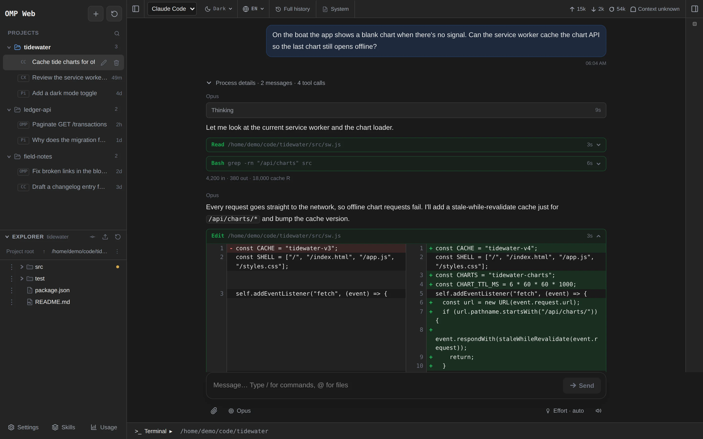
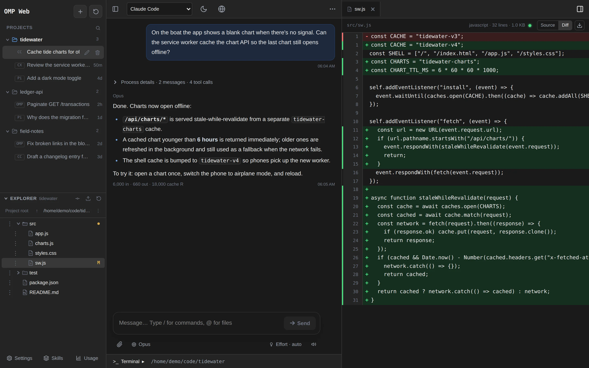
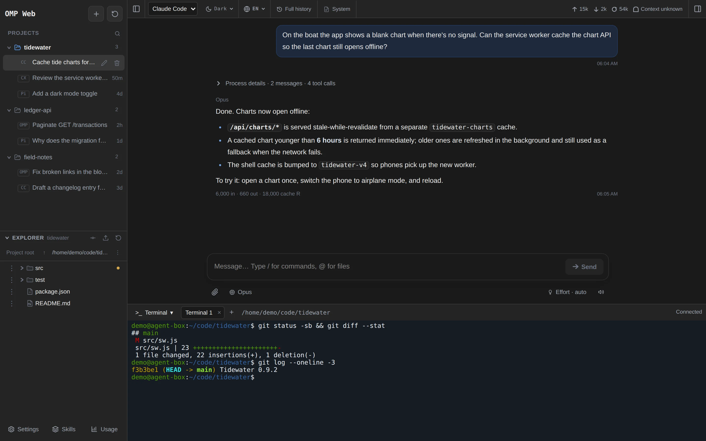
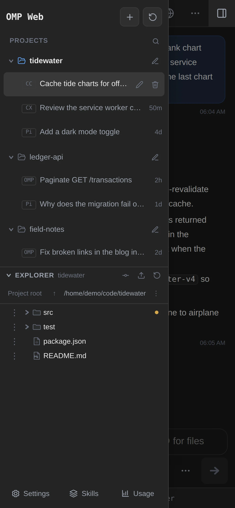

Four agents, one sidebar四个 Agent，一个侧边栏
Sessions are grouped by project and tagged OMP, Pi, CC, or CX. A session always resumes on the engine that created it.
会话按项目分组，标注 OMP、Pi、CC 或 CX；已有会话总在原来的引擎上继续。
Use your local OMP, Pi, Claude Code, and Codex CLI from one browser workspace, with a terminal and file manager right beside them. No workflow to rebuild. 在同一个浏览器工作区使用你本地的 OMP、Pi、Claude Code 和 Codex CLI，旁边就是终端和文件管理器。不用重新配置工作流。
curl -fsSL https://raw.githubusercontent.com/leafiy/omp-web/main/scripts/install.sh | bash



Real screenshots of omp-web, taken with demo projects and conversations.omp-web 实际界面截图，使用演示项目和对话。
I keep Claude Code, Codex, OMP, and Pi on a low-spec, always-on Linux machine at a remote home, with omp-web running next to them. The agents, their logins, and the projects all stay on that one machine.
我把 Claude Code、Codex、OMP 和 Pi 放在异地家里一台常开的低配 Linux 小电脑上，omp-web 也部署在同一台机器上。Agent、各自的登录和项目都只留在这一台机器上。
SSH got me connected, but copying long replies, scrolling back, reading diffs, and moving screenshots around were clumsy, especially on a phone. Now I open a page: read and copy, review changes, upload files, and when I need a shell, it's right there.
以前用 SSH 也能连上，但复制长回复、翻滚屏、看 diff、传截图都很别扭，手机上更难受。现在打开网页就能阅读和复制、检查改动、上传文件；需要命令行时，旁边就有终端。
The models run in the cloud, so the host never runs a large model. It still needs room for the CLIs and your builds. This is my setup, not a minimum spec. 模型在云端，主机不用跑大模型；但 CLI 和项目构建仍要占资源。这是我个人的配置，不是最低硬件要求。

The selected agent still makes every model call, runs its own tools, and decides permissions. omp-web adds what's awkward over SSH. 模型调用、工具执行和权限决定仍由所选 Agent 负责。omp-web 补上 SSH 里不顺手的部分。
Sessions are grouped by project and tagged OMP, Pi, CC, or CX. A session always resumes on the engine that created it.
会话按项目分组，标注 OMP、Pi、CC 或 CX；已有会话总在原来的引擎上继续。
Each CLI keeps its own login, models, skills, and project instructions. There's no API key to paste into a web settings page.
每个 CLI 继续用自己的登录、模型、技能和项目指令，不用往网页设置里再填 API Key。
Tabbed shells open in the project directory, separate from the conversation. For TUI-only features, run claude or codex right there.
多标签终端在项目目录打开，与对话互不干扰。TUI 独有的功能，直接在里面运行 claude、codex。
Preview files and read Git diffs next to the conversation. Copy, move, rename, upload, or download without typing a path.
在对话旁预览文件、查看 Git diff；复制、移动、重命名、上传、下载都不用敲路径。
Add it to the home screen and it opens full-screen like an app. Touch layouts, with a "More" menu where desktop uses right-click.
添加到主屏幕后像 App 一样全屏打开；触屏布局，用「更多」菜单代替右键。
Paste screenshots or drop files mid-run. Follow-ups queue up, and you can pull one back to edit before it's sent.
运行中也能粘贴截图、拖入文件；追加的消息进入队列，发送前还能取回修改。
Run it as the user whose agents are already logged in. --service adds a systemd unit that starts on boot and listens on 127.0.0.1:30141.
用已经登录好 Agent 的那个用户运行。--service 会安装开机自启的 systemd 服务，监听 127.0.0.1:30141。
curl -fsSL https://raw.githubusercontent.com/leafiy/omp-web/main/scripts/install.sh | bash -s -- --serviceTailscale: put HTTPS in front of loopback, then add the *.ts.net name to PI_WEB_ALLOWED_HOSTS. EasyTier: install with --host <virtual-ip> and open it by IP.
Tailscale：用 Serve 给回环地址套上 HTTPS，并把 *.ts.net 域名加入 PI_WEB_ALLOWED_HOSTS。EasyTier：安装时加 --host <虚拟IP>，直接用 IP 访问。
tailscale serve --bg 30141Open the link on your phone, sign in, and use "Add to Home Screen". From then on it opens full-screen, like an app.
在手机上打开链接、登录，然后「添加到主屏幕」。之后它会像 App 一样全屏打开。
https://<machine>.<tailnet>.ts.net
Host: Linux · Node.js 22.19+ · npm · Git, plus at least one logged-in agent (omp, pi, claude, codex). The installer checks these but never installs runtimes.
主机要求：Linux · Node.js 22.19+ · npm · Git，以及至少一个已登录的 Agent（omp、pi、claude、codex）。安装脚本只检查，不会替你安装运行时。
"I've tried a number of agent integration tools. They do more, but for the workflow I already had, the extra configuration, terminal management, and workspace conventions often got in the way. I just wanted to keep using my existing agents from a browser." “我试过不少 Agent 整合工具。它们功能更多，但对我已有的工作流来说，额外的配置、终端管理和工作区约定经常反而是干扰。我只想在浏览器里继续用原来的 Agent。” — the maintainer—— 维护者
A terminal runtime for agents: background sessions, panes, agent status, local and SSH machines, plus a desktop app.
Agent 终端 runtime：后台会话、pane、Agent 状态、本地与 SSH 机器，另有桌面应用。
An agent orchestration workspace: parallel worktrees, Chat/Terminal modes, code review, remote runtimes, and a mobile companion.
Agent 编排工作区：并行 worktree、Chat/Terminal、代码审查、远程运行环境和手机伴侣应用。
A local daemon with desktop, mobile, web, and CLI clients. Parallel agents in their own worktrees, cross-provider orchestration, and device pairing over an encrypted relay or a VPN.
本机守护进程，加桌面、手机、网页和 CLI 客户端；并行 Agent 各用 worktree，可跨 Agent 编排；设备经加密中继或 VPN 连接。
One web page on the host: your local OMP, Pi, Claude Code, and Codex CLI, plus a terminal and a file manager. No orchestration, no client to install, no pairing.
主机上的一个网页：本机的 OMP、Pi、Claude Code、Codex CLI，加上终端和文件管理。不做编排，不用装客户端，也不用配对。
All four run the native CLIs, and each has its own remote, terminal, or file features, so none of those are unique to omp-web. Based on official documentation, checked 2026-11-07 and 2026-11-08 · sources 这几个工具都运行原生 CLI，也都有各自的远程、终端或文件功能，这些都不是 omp-web 独有的。依据官方文档，查阅于 2026-11-07 与 2026-11-08 · 来源
No. The agent you pick (OMP, Pi, Claude Code, or Codex CLI) makes the model calls, runs the tools, and decides permissions. omp-web starts it through its native interface and shows the conversation, a terminal, and your files.
不是。模型调用、工具执行和权限决定都由你选的 OMP、Pi、Claude Code 或 Codex CLI 完成。omp-web 通过它们的原生接口启动会话，负责展示对话、终端和文件。
No. Install omp-web as the user whose agents are already logged in. Each CLI keeps reading its own configuration, and credentials are never copied between agents.
不需要。用已经登录好 Agent 的那个用户安装 omp-web，各 CLI 继续读取自己的配置，凭据也不会在 Agent 之间复制。
No. Each agent calls whatever provider it's configured for, usually in the cloud. A low-spec machine is fine as long as it has room for the CLIs and your builds.
不需要。每个 Agent 按自己的配置调用模型，一般在云端。只要放得下 CLI 和项目构建，低配机器也可以。
A browser and a route to the host, for example through Tailscale or EasyTier. No agent CLI, desktop app, or SSH client.
一个浏览器，加上能到达主机的网络，比如 Tailscale 或 EasyTier。不需要装 Agent CLI、桌面应用或 SSH 客户端。
Not over plain HTTP. Login is always required, but the page has the same access as the service account, and the terminal is a real shell. Keep it on loopback behind Tailscale Serve or another HTTPS proxy, or bind it to a private VPN address.
不要用明文 HTTP。虽然必须登录，但网页拥有服务账户的全部权限，终端就是真正的 Shell。建议只监听回环地址，通过 Tailscale Serve 等 HTTPS 代理访问，或者绑定到私有 VPN 地址。
Yes, nothing changes for the CLIs. For features only the TUI has, open the built-in terminal and run claude, codex, omp, or pi.
可以，原来的用法完全不变。TUI 独有的功能，在内置终端里运行 claude、codex、omp 或 pi 即可。
Running agent turns and terminals are interrupted. Each agent stores its own conversations, so you can reopen them afterwards.
正在运行的 Agent 和终端会被中断。会话由各 Agent 自己保存，重启后可以重新打开继续。
curl -fsSL https://raw.githubusercontent.com/leafiy/omp-web/main/scripts/install.sh | bash